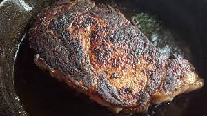

Reverse Seared Ribeye

Description
In this recipe, you will learn how to reverse-sear a rib-eye steak to the perfect medium rare every single time. Reverse searing is a technique in which you
you raise the internal temperature of the steak to the desired temperature and finish the steak off with hot sear in a pan. This method of cooking the steak
will result in a much more consistent, but also juicier steak.
Ingredients
- 1 ribeye steak at least 1 in thick
- 6 cloves of garlic
- 2 sprigs of thyme
- 2 tbsp course salt
- 2 tsp cracked black pepper
- 2 tbps unsalted butter
- 1 tbps avocado oil (or any oil with a high smoke point)
Steps
- Preheat the oven to 275 degrees. Once the oven has been preheated place the steak on a roasting tray and place on the middle rack of the oven as far back
as possible. The hottest part of the oven is the back so this will help keep the steak cooking. Try to avoid using a cookie sheet and opt for a roasting rack
or wire rack as you want consistent exposure to heat on all sides of the steak.
- Leave the steak in the oven for 20 minutes. While the steak is getting ready for the pan, lightly smash the garlic to release the aromatics
- After 20 minutes, remove the steak from the oven and let rest for 5 minutes
- While the steak is resting, heat a cast iron skillet to high on the stove.
- Once the cast iron has been heated, add the oil and spread it out. Place the steak into the pan first, and following the steak add the butter, garlic
and thyme.
- Allow the steak to sear on one side for at least a minute or two, and then flip it. When you flip the steak, the steak should look a very dark brown.
- Once both sides of the steak have been seared, remove from heat and place the steak on a cutting board, allowing it to rest for 5 more minutes
- Once the steak has been rested, cut against the grain and serve.